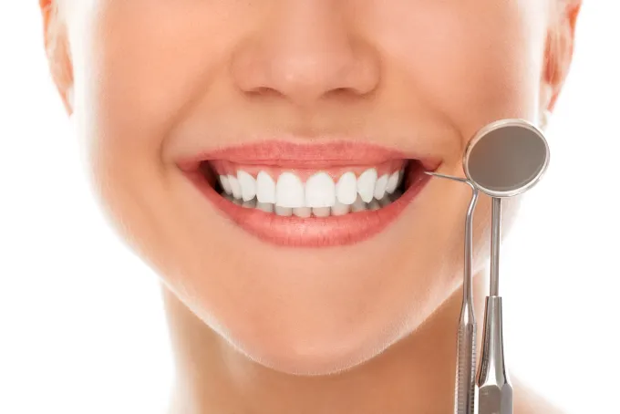
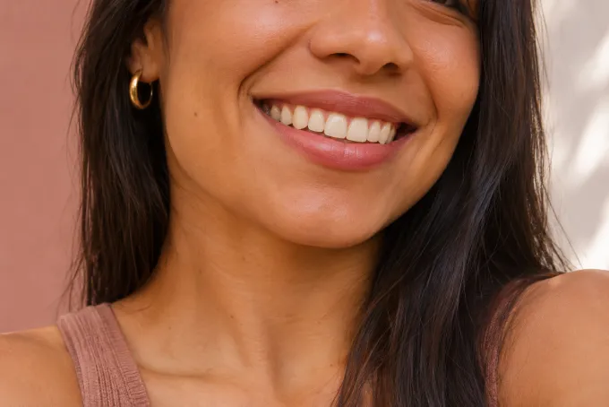
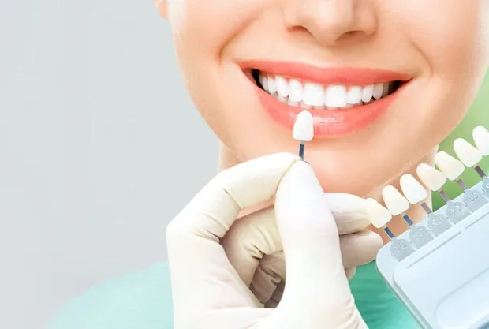
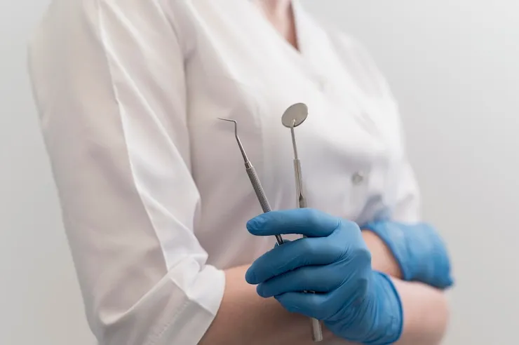

Limpeza dental
Remoção de placa e tártaro, com orientações para cuidar dos dentes e da gengiva entre as consultas.
ConsultarA Dra. Janaína Lavall atende no Santo Antônio, em Belo Horizonte, com consultas, prevenção e tratamentos estéticos.

Remoção de placa e tártaro, com orientações para cuidar dos dentes e da gengiva entre as consultas.
Consultar
Conheça as opções para clarear a cor dos dentes após avaliar sua saúde bucal e sua sensibilidade.
ConsultarConverse sobre as opções para repor dentes ausentes e recuperar a função na mastigação.
Consultar
Avaliação da indicação de facetas para ajustar a forma e a aparência dos dentes.
Consultar
Consultas, restaurações, tratamento de canal e cirurgias odontológicas conforme a avaliação.
ConsultarImagens dos tratamentos são ilustrativas.
Cirurgiã-dentista · CRO-MG 28966
A Dra. Janaína atende em consultório particular em Belo Horizonte. Na primeira consulta, você pode contar o que está incomodando, tirar dúvidas e entender as opções de cuidado para o seu caso. Consultar horários
Entre em contato pelo WhatsApp do consultório, no número (31) 98452-1029, para consultar os horários.
De segunda a sexta, das 8h às 19h, e aos sábados, das 9h às 13h. Consulte a disponibilidade pelo WhatsApp.
Sim. O consultório informa que há estacionamento próprio. Você pode confirmar os detalhes de acesso ao agendar.
A indicação depende da avaliação odontológica. Na consulta, você pode conversar com a Dra. Janaína sobre as opções para o seu caso.
Estacionamento próprio